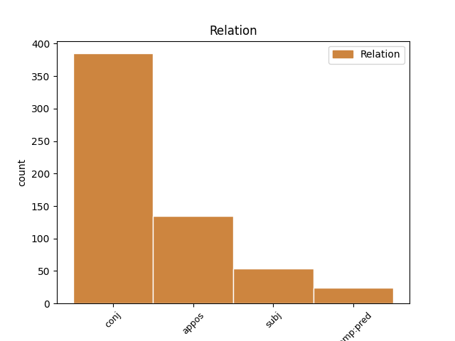
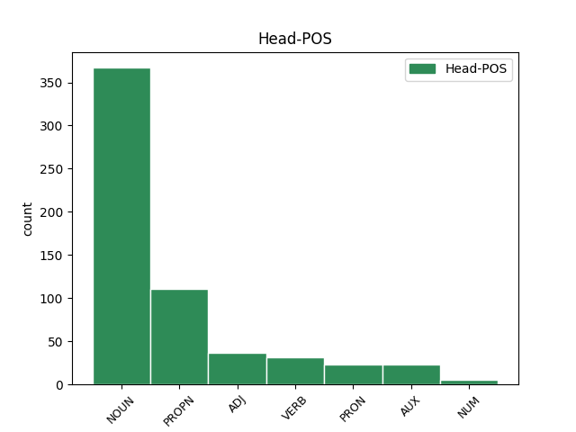
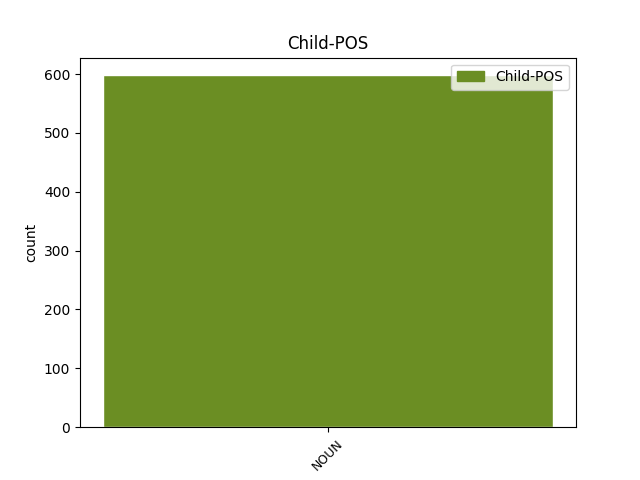

Distribution of features within this leaf



Agreement Rules sorted by frequency.
- When the dependent token is the conjunct(conj) of the head token, and the dependent token is NOUN.
1 ꙇ _ _ _ _ 0 _ _ _
2 се _ _ _ _ 0 _ _ _
3 рекъ _ _ _ _ 0 _ _ _
4 показа _ _ _ _ 0 _ _ _
5 имъ _ _ _ _ 0 _ _ _
6 рѫцѣ _ _ _ _ 0 _ _ _
7 и _ _ _ _ 0 _ _ _
8 ноѕѣ нога NOUN Nb Case=Acc|Gender=Fem|Number=Dual 0 _ _ _
9 и _ _ _ _ 0 _ _ _
10 ребра ребро NOUN Nb Case=Acc|Gender=Neut|Number=Plur 8 conj _ ref=JOHN_20.20
11 своѣ _ _ _ _ 0 _ _ _
1 си _ _ _ _ 0 _ _ _
2 же _ _ _ _ 0 _ _ _
3 писана _ _ _ _ 0 _ _ _
4 бꙑшѧ _ _ _ _ 0 _ _ _
5 да _ _ _ _ 0 _ _ _
6 вѣрѫ _ _ _ _ 0 _ _ _
7 имете _ _ _ _ 0 _ _ _
8 ѣко _ _ _ _ 0 _ _ _
9 и҃с _ _ _ _ 0 _ _ _
10 естъ _ _ _ _ 0 _ _ _
11 х҃ъ христ(ос)ъ PROPN Ne Case=Nom|Gender=Masc|Number=Sing 0 _ _ _
12 с҃нъ сꙑнъ NOUN Nb Case=Nom|Gender=Masc|Number=Sing 11 appos _ LId=1|ref=JOHN_20.31
13 б҃жіи _ _ _ _ 0 _ _ _
14 ꙇ _ _ _ _ 0 _ _ _
15 да _ _ _ _ 0 _ _ _
16 вѣрѫѭште _ _ _ _ 0 _ _ _
17 живота _ _ _ _ 0 _ _ _
18 вѣчънааго _ _ _ _ 0 _ _ _
19 имате _ _ _ _ 0 _ _ _
20 въ _ _ _ _ 0 _ _ _
21 імѧ _ _ _ _ 0 _ _ _
22 его _ _ _ _ 0 _ _ _
1 и _ _ _ _ 0 _ _ _
2 ини _ _ _ _ 0 _ _ _
3 придѫ _ _ _ _ 0 _ _ _
4 корабли _ _ _ _ 0 _ _ _
5 отъ _ _ _ _ 0 _ _ _
6 тивериѣдꙑ _ _ _ _ 0 _ _ _
7 близъ _ _ _ _ 0 _ _ _
8 мѣста _ _ _ _ 0 _ _ _
9 идеже _ _ _ _ 0 _ _ _
10 ѣсѧ _ _ _ _ 0 _ _ _
11 хлѣбꙑ _ _ _ _ 0 _ _ _
12 хвалѫ _ _ _ _ 0 _ _ _
13 въздавъшю въздати VERB V- Case=Dat|Gender=Masc|Number=Sing|Strength=Strong|Tense=Past|VerbForm=Part|Voice=Act 0 _ _ _
14 г҃ю господь NOUN Nb Case=Dat|Gender=Masc|Number=Sing 13 subj _ ref=JOHN_6.23
1 Тома _ _ _ _ 0 _ _ _
2 же _ _ _ _ 0 _ _ _
3 единъ _ _ _ _ 0 _ _ _
4 отъ _ _ _ _ 0 _ _ _
5 обою _ _ _ _ 0 _ _ _
6 на _ _ _ _ 0 _ _ _
7 десѧте _ _ _ _ 0 _ _ _
8 нарицаемꙑ нарицати VERB V- Case=Nom|Gender=Masc|Number=Sing|Strength=Weak|Tense=Pres|VerbForm=Part|Voice=Pass 0 _ _ _
9 близнецъ близньць NOUN Nb Case=Nom|Gender=Masc|Number=Sing 8 comp:pred _ ref=JOHN_20.24
10 не _ _ _ _ 0 _ _ _
11 бѣ _ _ _ _ 0 _ _ _
12 тоу _ _ _ _ 0 _ _ _
13 съ _ _ _ _ 0 _ _ _
14 ними _ _ _ _ 0 _ _ _
15 егда _ _ _ _ 0 _ _ _
16 приде _ _ _ _ 0 _ _ _
17 и҃с _ _ _ _ 0 _ _ _
Disagree Examples:
1 не _ _ _ _ 0 _ _ _
2 придъ _ _ _ _ 0 _ _ _
3 бо _ _ _ _ 0 _ _ _
4 праведьникъ правьдьникъ NOUN Nb Case=Gen|Gender=Masc|Number=Plur 0 _ _ _
5 призъватъ _ _ _ _ 0 _ _ _
6 нъ _ _ _ _ 0 _ _ _
7 грѣшъникꙑ грѣшьникъ NOUN Nb Case=Acc|Gender=Masc|Number=Plur 4 conj _ ref=MATT_9.13
8 на _ _ _ _ 0 _ _ _
9 покаание҅ _ _ _ _ 0 _ _ _
1 не _ _ _ _ 0 _ _ _
2 придъ _ _ _ _ 0 _ _ _
3 въврѣщъ _ _ _ _ 0 _ _ _
4 мира миръ NOUN Nb Case=Gen|Gender=Masc|Number=Sing 0 _ _ _
5 нъ _ _ _ _ 0 _ _ _
6 мечъ мечь NOUN Nb Case=Acc|Gender=Masc|Number=Sing 4 conj _ ref=MATT_10.34
1 придъ _ _ _ _ 0 _ _ _
2 бо _ _ _ _ 0 _ _ _
3 разлѫчитъ разлѫчити VERB V- Case=Nom|VerbForm=Sup 0 _ _ _
4 ч҃лвка _ _ _ _ 0 _ _ _
5 на _ _ _ _ 0 _ _ _
6 о҃тца _ _ _ _ 0 _ _ _
7 своего _ _ _ _ 0 _ _ _
8 ꙇ _ _ _ _ 0 _ _ _
9 дъштерь дъщи NOUN Nb Case=Acc|Gender=Fem|Number=Sing 3 conj _ ref=MATT_10.35
10 на _ _ _ _ 0 _ _ _
11 матерь _ _ _ _ 0 _ _ _
12 своѭ҄ _ _ _ _ 0 _ _ _
13 и _ _ _ _ 0 _ _ _
14 невѣстѫ _ _ _ _ 0 _ _ _
15 на _ _ _ _ 0 _ _ _
16 свекровь _ _ _ _ 0 _ _ _
17 своѭ҄ _ _ _ _ 0 _ _ _
1 Ꙇже _ _ _ _ 0 _ _ _
2 любитъ _ _ _ _ 0 _ _ _
3 о҃тца отьць NOUN Nb Case=Gen|Gender=Masc|Number=Sing 0 _ _ _
4 ли _ _ _ _ 0 _ _ _
5 матерь мати NOUN Nb Case=Acc|Gender=Fem|Number=Sing 3 conj _ ref=MATT_10.37
6 паче _ _ _ _ 0 _ _ _
7 мене _ _ _ _ 0 _ _ _
8 нѣстъ _ _ _ _ 0 _ _ _
9 мене _ _ _ _ 0 _ _ _
10 достоинъ _ _ _ _ 0 _ _ _
11 и _ _ _ _ 0 _ _ _
12 ꙇже _ _ _ _ 0 _ _ _
13 любитъ _ _ _ _ 0 _ _ _
14 с҃нъ _ _ _ _ 0 _ _ _
15 ли _ _ _ _ 0 _ _ _
16 дъштерь _ _ _ _ 0 _ _ _
17 паче _ _ _ _ 0 _ _ _
18 мене _ _ _ _ 0 _ _ _
19 нѣстъ _ _ _ _ 0 _ _ _
20 мене _ _ _ _ 0 _ _ _
21 достоинъ _ _ _ _ 0 _ _ _
22 ꙇ҅ _ _ _ _ 0 _ _ _
23 иже _ _ _ _ 0 _ _ _
24 не _ _ _ _ 0 _ _ _
25 прииметъ _ _ _ _ 0 _ _ _
26 к҃рста _ _ _ _ 0 _ _ _
27 своего _ _ _ _ 0 _ _ _
28 и _ _ _ _ 0 _ _ _
29 въ _ _ _ _ 0 _ _ _
30 слѣдъ _ _ _ _ 0 _ _ _
31 мене _ _ _ _ 0 _ _ _
32 грѧдетъ _ _ _ _ 0 _ _ _
33 нѣстъ _ _ _ _ 0 _ _ _
34 мене _ _ _ _ 0 _ _ _
35 достоинъ _ _ _ _ 0 _ _ _
1 Тъгда _ _ _ _ 0 _ _ _
2 пристѫпишѧ _ _ _ _ 0 _ _ _
3 къ _ _ _ _ 0 _ _ _
4 и҃сви _ _ _ _ 0 _ _ _
5 иже _ _ _ _ 0 _ _ _
6 бѣахѫ _ _ _ _ 0 _ _ _
7 въ _ _ _ _ 0 _ _ _
8 и҃мѣ иѥроусалимъ PROPN Ne Case=Loc|Gender=Masc|Number=Sing 0 _ _ _
9 кънижъници кънижьникъ NOUN Nb Case=Nom|Gender=Masc|Number=Plur 8 appos _ ref=MATT_15.1
10 и _ _ _ _ 0 _ _ _
11 фарисѣи _ _ _ _ 0 _ _ _
12 г҃лѭште _ _ _ _ 0 _ _ _